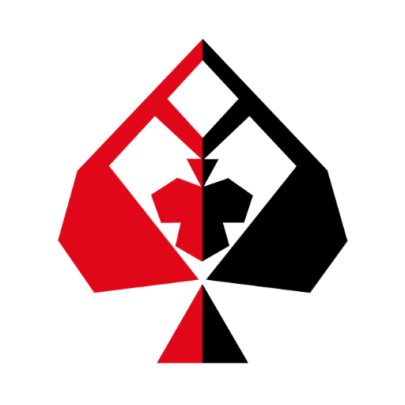

<!-- Header without a border -->

<ion-header class="ion-no-border" [translucent]="true">

  <ion-toolbar>
    <ion-title>Writers' Repo</ion-title>

    <!-- <ion-searchbar *ngIf="openSearch" showCancelButton="never" inputmode="text" (search)="searchAuthor($event)" (ionBlur)="openSearch=false" animated color="danger"></ion-searchbar> -->

    <ion-buttons slot="primary">
      <!-- <ion-button (click)="openSearch()">
        
      </ion-button> -->

      <!-- <ion-button (click)="openSearchModal($event)">
        <ion-icon slot="icon-only" name="search-outline"></ion-icon>
      </ion-button> -->

      <ion-button [disabled]="data.posts?data.posts.length<=0:false" (click)='util.toggleView()'>

        <ion-icon *ngIf='!util.gridView' name="grid-outline" slot='end'></ion-icon>

        <ion-icon *ngIf='util.gridView' name="reorder-four-outline" slot='end'></ion-icon>

      </ion-button>

      <!-- <ion-button disabled (click)="openFilter($event)">
        <ion-icon slot="icon-only" name="options-outline"></ion-icon>
      </ion-button> -->

      <!--<ion-button disabled (click)="openNotifications($event)">
        <ion-icon slot="icon-only" name="notifications-outline"></ion-icon>
      </ion-button> -->

      <ion-button (click)="dropDownOptions($event)">
        
      </ion-button>

      <ion-button *ngIf="!networkService.isNetworkAvailable" (click)="util.presentAlert('You seem to have poor Internet', 'Connectivity Issue')">
        <ion-icon color="danger" slot="icon-only" name="wifi-outline"></ion-icon>
      </ion-button>

    </ion-buttons>
  </ion-toolbar>
</ion-header>

<ion-item lines="none" *ngIf="data.isNewUpdateAvailable">
  New Update Available
  <ion-button slot="end" (click)="util.updateApp($event)" color="primary" fill="clear" >
    <ion-icon name="download-outline"></ion-icon>
  </ion-button>
</ion-item>

<ion-content [fullscreen]="true" *ngIf="!isLoaded">

  <ion-slide>
    <div class="center">
    <ion-card-header>
      <ion-card-title>
        <ion-icon name="flash-off-outline"></ion-icon>
      </ion-card-title>
    </ion-card-header>
    <ion-card-content>
      <ion-card-subtitle>Hey, looks like something is wrong with one of us!
        <br/>Can we just speak and resolve it?</ion-card-subtitle>
    </ion-card-content>
    </div>
  </ion-slide>

</ion-content>

<ion-content [fullscreen]="true" *ngIf="isLoaded" #feed>

  <ion-header collapse="condense" mode="md">
    <ion-toolbar>
      <ion-title size="large">{{content.title}}</ion-title>
  </ion-toolbar>
  <!-- <ion-segment mode="ios" (ionChange)='segmentChanged($event)' scrollable [value]='userService.defaultCategory' *ngIf="networkService.isNetworkAvailable">
      <ion-segment-button *ngFor='let stage of data.stages'[value]='stage.name'>
        <ion-icon [name]='stage.icon'></ion-icon>
      </ion-segment-button>
  </ion-segment> -->
  </ion-header>

  <!-- <ion-segment mode="ios" (ionChange)='segmentChanged($event)' scrollable [value]='userService.defaultCategory' *ngIf="networkService.isNetworkAvailable">
      <ion-segment-button *ngFor='let stage of data.stages'[value]='stage.name'>
        <ion-icon [name]='stage.icon'></ion-icon>
      </ion-segment-button>
  </ion-segment> -->

  <ion-grid >
    <ion-row>
      <ion-col (click)="loadPostsByCategory(stage)" size="4"  *ngFor='let stage of data.stages'>
        <ion-card class="center tile">
          <ion-icon  class="tcdd2a27" [name]='stage.icon'></ion-icon><br/>
          <ion-label>{{stage.name}}</ion-label>
        </ion-card>
      </ion-col>
    </ion-row>
  </ion-grid>

<ion-searchbar mode="ios" showCancelButton="never" inputmode="text" (ionFocus)="openSearchModal($event)" (ionBlur)="openSearch=false" color="danger"></ion-searchbar>

<ion-item *ngIf="currentCategory!=''">
  <ion-chip>
    <ion-icon [name]="currentCategoryObj.icon" color="primary"></ion-icon>
    <ion-label>{{currentCategoryObj.name}}</ion-label>
    <ion-icon (click)="resetCategory()" name="close"></ion-icon>
  </ion-chip>
</ion-item>

<ion-refresher slot="fixed" (ionRefresh)="doRefresh($event)">
  <ion-refresher-content
    pullingIcon="refresh-outline"
    pullingText="Pull to refresh"
    refreshingSpinner="circles"
    refreshingText="Refreshing...">
  </ion-refresher-content>
</ion-refresher>

<!-- EMPTY CATEGORY HANDLE START -->

<ion-slide *ngIf="data.posts==null">
  <div class="center">
  <ion-card-header>
    <ion-card-title>
      <ion-icon name="list-outline"></ion-icon>
    </ion-card-title>
  </ion-card-header>
  <ion-card-content>
    <ion-card-subtitle>It would be great to have you as the first one to write on this Category!
      <br/><br/> <b >Create Now</b>
    </ion-card-subtitle>
  </ion-card-content>
  </div>
</ion-slide>

<!-- EMPTY CATEGOTY HANDLE END -->

<!-- LIST VIEW START -->

<!-- <ion-row *ngIf='false&&!util.gridView'>
  <ion-card *ngFor='let post of data.posts.slice().reverse()'>
    <ion-img (click)='openPostDetail(post,this.data.posts)' *ngIf="post.media.low_resolution.url" ion-img-cache [src]='post.media.low_resolution.url'></ion-img>
    <ion-card-header (click)='openPostDetail(post,this.data.posts)' >
      <ion-card-title>{{post.title}}</ion-card-title>
      <h4>{{post.subtitle}}</h4>
      <ion-note>{{post.created_datetime | date:'medium':'+0530'}}</ion-note>
      <ion-chip color="clear">
        <ion-avatar>
          
        </ion-avatar>
        <ion-label>{{post.user?post.user.full_name:'Community User'}}</ion-label>
      </ion-chip>
    </ion-card-header>
    <ion-card-content (click)='openPostDetail(post,this.data.posts)' >
      {{post.description.content.substr(0, 200)}}...
      <p align="right">Read more</p>
    </ion-card-content>
    <ion-item *ngIf="post.rating?(post.rating.length>0):false">
	      <ion-col>
          <ion-buttons>
            <ion-button color="clear">
              <ion-icon color="danger" name="heart"></ion-icon>
            </ion-button>
            <ion-badge color="clear">from {{post.rating.length}} writer{{(post.rating.length>1)?'s':''}} near you</ion-badge>
          </ion-buttons>
				</ion-col>
    </ion-item>
  </ion-card>
</ion-row> -->

<ion-fab vertical="bottom" horizontal="end" slot="fixed">
  <!-- <ion-fab-button (click)="scrollToTop(0)" size="small" color="light"> -->
    <ion-fab-button size="small" color="danger" style="margin: 2px;">
      <ion-icon (click)="scrollToTop(0)" name="arrow-up-outline" color="light"></ion-icon>
    </ion-fab-button>
  <!-- </ion-fab-button> -->
  <!-- <ion-fab-button (click)="scrollToBottom(0)" size="small" color="light"> -->
    <!-- <ion-badge color="danger" style="margin: 2px;">
      <ion-icon (click)="scrollToBottom(0)" name="arrow-down-outline" color="light"></ion-icon>
    </ion-badge> -->
  <!-- </ion-fab-button> -->
</ion-fab>

<div *ngIf='!util.gridView&&data.posts!=null&&data.posts.length>0' class="container">
  <div *ngFor='let post of data.posts.slice().reverse(); let i=index'>
    <ion-row class="meta" *ngIf="!post.isQuill">
      <ion-col>
        <!-- <ion-card-header (click)='openPostDetail(post,this.data.posts)' > -->
        <!-- </ion-card-header> -->
        <ion-chip color="clear" (click)="openProfilePage(post.user)">
          <ion-avatar>
            
          </ion-avatar>
          <ion-note>{{post.user?post.user.full_name:'Community User'}}</ion-note>
        </ion-chip>
        <ion-card-content (click)='openPostDetail(post,this.data.posts)'>

          <ion-card-title><b>{{post.title}}</b></ion-card-title>
          <ion-card-title>{{post.subtitle}}</ion-card-title>
          <!-- <ion-note>{{post.created_datetime | date:'medium':'+0530'}}</ion-note> -->
        </ion-card-content>
        <ion-row (click)='openPostDetail(post,this.data.posts)'>
          <ion-card-content>
            {{post.description.content.substr(0, 50)}}...
            <ion-note>{{post.created_datetime | date:'medium':'+0530'}}</ion-note>
          </ion-card-content>
        </ion-row>
      </ion-col>
      <ion-col size="3" (click)='openPostDetail(post,this.data.posts)'>
        <ion-img *ngIf="post.media.low_resolution.url" ion-img-cache [src]='post.media.thumbnail.url'></ion-img>

        <ion-row class='right'>
          <ion-note *ngIf="post.views?post.views.length>0:false">{{post.views.length}} <ion-icon color="medium" name="eye-outline"></ion-icon></ion-note>
          <ion-note *ngIf="post.rating?post.rating.length>0:false">{{post.rating.length}} <ion-icon color="danger" name="heart"></ion-icon></ion-note>
          <ion-note *ngIf="post.comment?post.comment.length>0:false">{{post.comment.length}} <ion-icon color="medium" name="chatbubbles"></ion-icon></ion-note>
        </ion-row>
      </ion-col>
    </ion-row>

    <ion-row class="meta" *ngIf="post.isQuill">
      <ion-col>
        <!-- <ion-card-header (click)='openPostDetail(post,this.data.posts)' > -->
        <!-- </ion-card-header> -->
        <ion-chip color="clear" (click)="openProfilePage(post.user)">
          <ion-avatar>
            
          </ion-avatar>
          <ion-note>{{post.user?post.user.full_name:'Community User'}}</ion-note>
        </ion-chip>
        <ion-card-content (click)='openPostDetail(post,this.data.posts)'>

          <ion-card-title><b>{{post.title}}</b></ion-card-title>
          <ion-card-title>{{post.subtitle}}</ion-card-title>
          <!-- <ion-note>{{post.created_datetime | date:'medium':'+0530'}}</ion-note> -->
        </ion-card-content>
        <ion-row class="post-max-height">
          <ion-card-content (click)='openPostDetail(post,this.data.posts)' [innerHTML]="post.description.quillContent">
          </ion-card-content>
        </ion-row>
        <ion-row>
          <ion-card-content (click)='openPostDetail(post,this.data.posts)'>
            <ion-note>{{post.created_datetime | date:'medium':'+0530'}}</ion-note>
          </ion-card-content>
        </ion-row>
      </ion-col>
      <ion-col size="3" (click)='openPostDetail(post,this.data.posts)'>
        <ion-img *ngIf="post.media.low_resolution.url" ion-img-cache [src]='post.media.thumbnail.url'></ion-img>
        <ion-row class='right'>
          <ion-note *ngIf="post.views?post.views.length>0:false">{{post.views.length}} <ion-icon color="medium" name="eye-outline"></ion-icon></ion-note>
          <ion-note *ngIf="post.rating?post.rating.length>0:false">{{post.rating.length}} <ion-icon color="danger" name="heart"></ion-icon></ion-note>
          <ion-note *ngIf="post.comment?post.comment.length>0:false">{{post.comment.length}} <ion-icon color="medium" name="chatbubbles"></ion-icon></ion-note>
        </ion-row>
      </ion-col>
    </ion-row>
  </div>
</div>

<!-- LIST VIEW END -->

<!-- GRID VIEW START -->

<ion-grid class='sticky' *ngIf='util.gridView'>
  <ion-row class='wrapper' *ngIf="data.posts!=null">
    <ion-col *ngFor='let post of data.posts.slice().reverse()' (click)='openPostDetail(post,this.data.posts)' style='padding: 1px;' [size]='4'>
      <ion-note *ngIf="currentCategory==''" style="position: absolute; top: 0; padding: 5px; color: white; text-align: right;"><i>{{post.category}}</i></ion-note>
      <div style="bottom: 0; left: 0; position: absolute; width: 100%; height: 25%; background-image: linear-gradient(to bottom, rgba(221,42,39,0), rgba(221,42,39,1));">
        <ion-label style="position: absolute; bottom: 0; padding: 5px; color: white;">{{post.title.substr(0, 14)}}...</ion-label>
        <!-- <ion-avatar style="background-color: white; position: absolute; top: 50%; right: 0; padding: 5px; width: 1.2em; height: 1.2em;">
          
        </ion-avatar> -->
      </div>
      <!-- <ion-avatar style="background-color: white; position: absolute; top: 50%; right: 0; padding: 5px; width: 1.2em; height: 1.2em;">
        <ion-icon name=""></ion-icon>
      </ion-avatar> -->
      <ion-img ion-img-cache *ngIf="post.media.thumbnail.url" [src]='post.media.thumbnail.url'></ion-img>
    </ion-col>
  </ion-row>
</ion-grid>

<!-- GRID VIEW END -->

<!-- <ion-fab vertical="bottom" horizontal="end" slot="fixed">
  <ion-fab-button (click)='openWriteComponent()' size="small" color="success">
    <ion-icon name="pencil-outline"></ion-icon>
  </ion-fab-button>
</ion-fab> -->

</ion-content>
